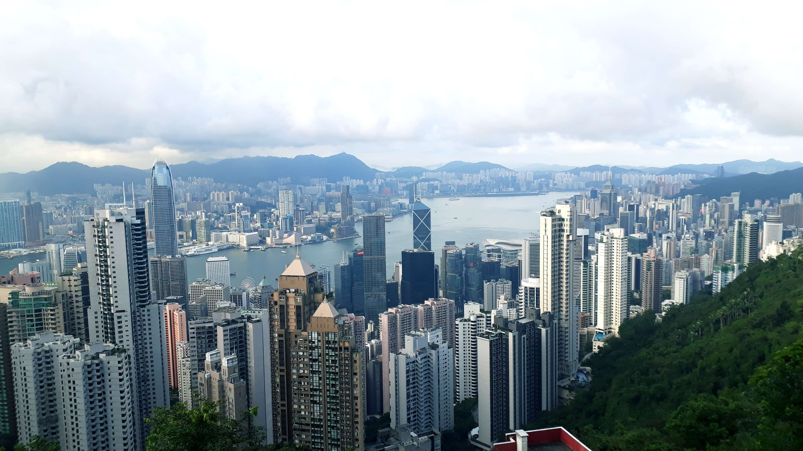
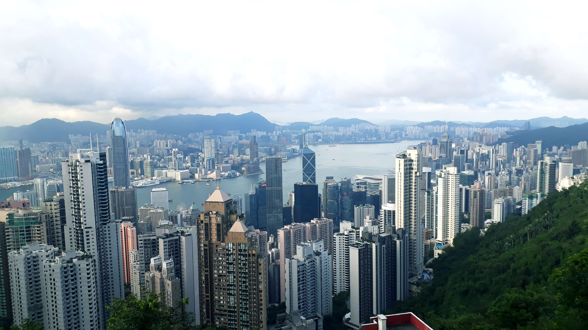

취미 & 여행
짧게 즐기는 게임과, 오래 기억에 남는 여행.
이 두 가지가 제가 가장 좋아하는 취미입니다.
아래에는 제가 좋아하는 게임과
다녀온 여행들의 일부를 사진과 함께 담았습니다.
짧게 즐기는 게임과, 오래 기억에 남는 여행.
이 두 가지가 제가 가장 좋아하는 취미입니다.
아래에는 제가 좋아하는 게임과
다녀온 여행들의 일부를 사진과 함께 담았습니다.
게임은 단순히 시간을 보내는 활동이 아니라,
전략과 팀워크를 배우는 하나의 경험이라고 생각합니다.
플레이 스타일을 분석하고, 더 좋은 선택을 찾는 과정이 재미있습니다.

제주도, 동남아, 일본, 중동, 유럽까지
여러 곳을 여행하며 다양한 풍경과 문화를 직접 보았습니다.
여행을 할 때마다 “세상은 생각보다 넓고, 나는 아직 볼 것이 많다”는 느낌을 받습니다.
여러 번 찾았던 제주도는
언제 가도 편안하고 익숙한 느낌을 주는 곳입니다.
 

두바이, 태국, 말레이시아 등 동남아 여행에서는
여유로운 공기와 다양한 거리 풍경이 특히 기억에 남습니다.
일본에서는 깔끔하게 정돈된 거리와
조용한 골목의 분위기가 인상적이었습니다.
폴란드, 프랑스, 이탈리아, 오스트리아 등
유럽 여러 도시를 다니며,
같은 유럽 안에서도 서로 다른 분위기를 느낄 수 있었습니다.
※위에 나온 사진들은 다운로드한 사진이 아닌 직접찍은 사진임을 밝힙니다.※